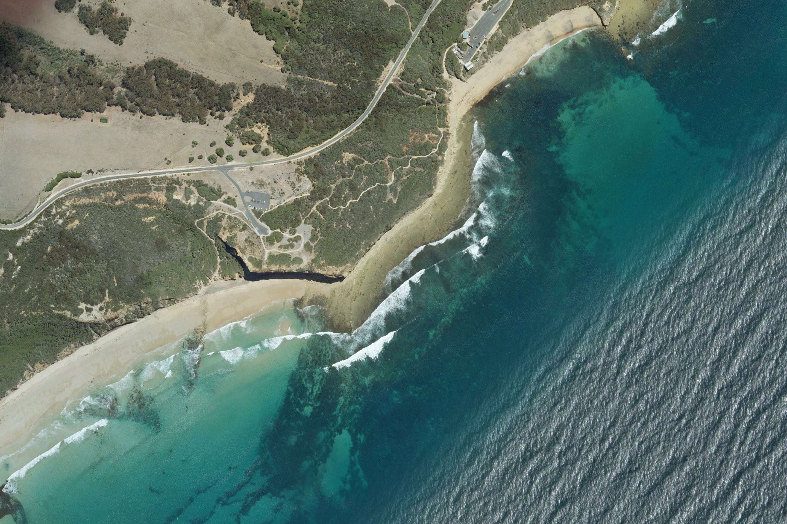

Bells Beach, Aus.
Sea/Ocean
Length
Favorable swell
Faborable wind
Wave direction
Bottom
Wave Type
Difficulty level
People in the water
Quality
Pacific
600m
SW
NW
R
Rock
Reef Break
4.00
4.10
3.50

Bells Beach is located in the southern part of Australia.
It is an open spot to the sea with rock-bottom whose best season is autumn and winter.The spot offers world-class with long, fast right-hander waves and with pipe sections working better with rising mid-tide.
Usually there is a surfer when it works: respect the rest of surfers, be careful with rocks and sharks.
Current Forecast
0.9m - every 12s
4kn NE Glassy
Sunny
11 ºC